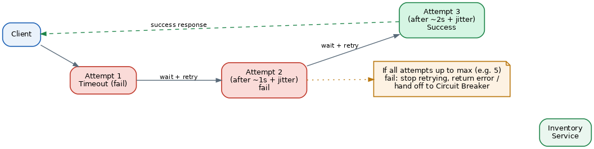

Retry Pattern
Table of Contents
Overview
If you've ever had a phone call drop and simply redialed the same number a moment later, you already understand the core idea behind the Retry pattern. Many failures in distributed systems aren't permanent — they're brief hiccups caused by things like a momentary network blip, a service that's busy for a second, or a server restarting during a routine deployment. These are called transient faults, and the useful thing about them is that if you simply try the same operation again a short time later, there's a good chance it will succeed.
The Retry pattern is the practice of automatically re-attempting a failed operation instead of immediately giving up and showing the user an error. Done well, it can turn a lot of "failures" that users would otherwise notice into invisible non-events, because the retry succeeds so quickly that nobody ever knows the first attempt failed. Done poorly, however, retries can make things worse rather than better — which is why the pattern isn't just "try it again," but involves real design decisions about how many times to retry, how long to wait between attempts, and which failures are even worth retrying in the first place.
The Retry Pattern as a Solution to Unreliable External Resources
Distributed applications constantly depend on things outside their own process: other microservices, third-party APIs, databases, message queues. Every one of those dependencies can fail briefly and then recover on its own, often within milliseconds to a few seconds. The Retry pattern exists specifically to handle that category of "self-correcting" failure automatically, rather than forcing every caller to fail immediately or forcing a human to manually try again.
Not every failure deserves a retry, though. A useful distinction is between transient errors (a network timeout, a "503 Service Unavailable", a connection reset — things likely caused by temporary conditions) and permanent errors (a "400 Bad Request" because the input was invalid, or a "401 Unauthorized" because the credentials are wrong). Retrying a permanent error is pointless — the tenth attempt will fail for exactly the same reason as the first — so a well-built retry mechanism checks what kind of error occurred before deciding to try again.
Retries must also be safe to repeat. An operation is called idempotent if performing it more than once has the same effect as performing it exactly once. Reading data is naturally idempotent; charging a customer's credit card is not, unless extra care is taken. This is why systems doing sensitive operations, like payments, typically attach a unique "idempotency key" to each request, so if a request is retried after the first attempt actually succeeded (but the success response was lost in transit), the receiving service recognizes the key and simply returns the original result instead of charging the customer twice.
The Architecture of the Retry Pattern
There are a few common strategies for spacing out retry attempts, each with different trade-offs:
- Immediate retry — try again right away, with no delay. This only makes sense for extremely quick, rare glitches, because retrying instantly against a service that's genuinely overloaded just adds to the overload.
- Fixed interval — wait the same amount of time (say, one second) between every retry attempt. Simple, but not very forgiving if the dependency needs more time to recover.
- Exponential backoff — double the wait time after each failed attempt (for example, 1 second, then 2, then 4, then 8). This gives a struggling service progressively more room to recover instead of being hit at a constant rate.
- Exponential backoff with jitter — the same growing delay as above, but with a small random amount of extra time added or subtracted at each step. This is the approach recommended by AWS and widely used in production systems, because it prevents many separate clients from all retrying at exactly the same moment.
Regardless of the strategy, a retry mechanism always needs a hard cap — a maximum number of attempts (or a maximum total time budget) — after which it stops retrying and reports failure back to the caller. Retrying "forever" simply delays an inevitable failure while wasting resources. Many production systems also pair the Retry pattern with the Circuit Breaker pattern, so that once a dependency looks consistently unhealthy rather than just briefly hiccuping, the system stops retrying altogether and fails fast until the circuit breaker allows a test request through again.
An Example
Consider a checkout service that needs to reserve stock by calling an inventory service, which occasionally returns a timeout under heavy load. Using exponential backoff with jitter, the flow looks like this:
- The checkout service calls the inventory service to reserve stock for an order.
- The call times out (a transient error). The checkout service checks: is this error type retryable, and have we exceeded the maximum retry count? Both checks pass, so it proceeds.
- It waits roughly 1 second (plus a small random jitter, e.g. between 0.8 and 1.2 seconds) and retries the call.
- The call fails again. It waits roughly 2 seconds (plus jitter) and retries.
- The call fails a third time. It waits roughly 4 seconds (plus jitter) and retries.
- This time the inventory service responds successfully, and the checkout process continues normally. If all attempts up to the configured maximum (say, 5 tries) had failed, the checkout service would stop retrying and return a clear error to the user instead of hanging indefinitely.

In simplified pseudo-code, the same flow looks like this:
function reserveStockWithRetry(order):
maxAttempts = 5
delay = 1 second
for attempt in 1..maxAttempts:
try:
return inventoryService.reserve(order)
catch (error):
if not isTransient(error) or attempt == maxAttempts:
throw error
wait(delay + randomJitter())
delay = delay * 2 // exponential backoffEach failed attempt is checked against two conditions before retrying: whether the error is actually transient (there's no point retrying a permanent error like invalid input), and whether the attempt count has already hit its maximum. Only if both checks pass does the function wait — for the current delay plus a small random jitter — and double the delay for next time. If either check fails, the error is thrown immediately instead of retried further.
Performance Implications
Retries trade a small amount of extra latency (waiting and trying again) for a much lower overall failure rate, which is usually a very good trade for the end user. But retries need to be designed carefully, because a poorly built retry mechanism can actively cause outages rather than prevent them.
The most well-known danger is the "retry storm" (also called a thundering herd): if a service goes down and thousands of clients are all configured to retry after the exact same fixed delay, they all hammer the service with a synchronized burst of traffic the moment it comes back up, potentially knocking it back over. Adding random jitter to the backoff delay directly addresses this by spreading retries out over time instead of bunching them together.
Another subtle risk is retry amplification through a chain of services. If Service A retries a failing call to Service B up to 3 times, and Service B itself retries its own call to Service C up to 3 times, a single failure at Service C can multiply into as many as 9 (or more, through longer chains) actual attempts hitting the lower levels of the system — far more load than anyone intended. This is why some organizations use a "retry budget," a system-wide cap on how much total retry traffic is allowed, coordinated across the different layers (client, gateway, service) rather than letting each layer retry independently without limits.
Use Cases and System Design Examples
Cloud provider SDKs build retry logic in by default: AWS SDKs, for example, use a "standard" or "adaptive" retry mode that automatically applies exponential backoff with jitter for things like throttling errors when calling AWS services, so most applications get sensible retry behavior without writing any custom code.
Calling third-party APIs is another classic use case — a mobile app calling a payment processor, a shipping-rate API, or an email delivery service will often retry a failed call a few times with backoff before falling back to a manual "try again later" prompt for the user, since brief outages on the other end are common and usually short-lived.
Database and message queue clients also rely heavily on this pattern: a transient connection error while talking to a database, or a temporary failure to publish a message onto a queue, is typically retried automatically a small number of times before the application escalates the error further up the stack.